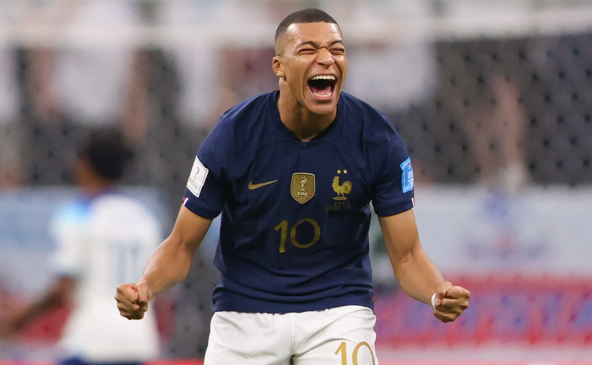
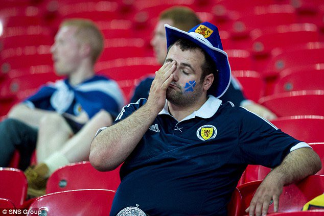

The squad have been thrashed 3-0 by the French after two goals from Kylian Mbappe scoring either side of the half-time mark Zander Clark seemed helpless in the Scotland goal and should've done better to keep out Theo Hernandez's late header. France move on to the final where they will look to finally win the championships again for the first time since 2000and will face Portugal in that final match. Scotland will be proud with how far they've come beating giants like Crotia and England on the way to the semis but France proved one step to far for Steve Clarkes' men.

